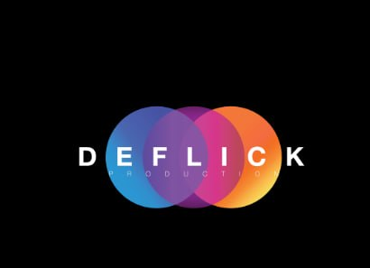

Your Ad Could Be Here
A film where commercial inventory becomes part of the story.

DEFLICK PRODUCTIONIndustrial cinema 2.0 / launch films / proof systems
Deflick builds cinematic launch objects for founders, producers, and brands that need more than a deck. We turn raw concepts into trailers, websites, sponsor systems, pitch language, and visual proof.
A film where commercial inventory becomes part of the story.
Austere launch films that make the maker feel unavoidable.
Timecodes, slots, buyers, and evidence presented as a media artifact.
method
One sentence sharp enough to travel without explanation.
Frames, motion, screenshots, and proof assets before the launch.
Packages, contacts, objections, and a daily operating rhythm.
available for selected launches